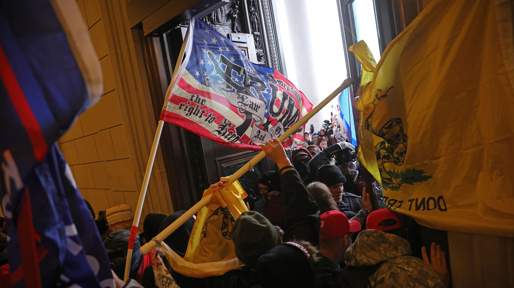

House passes George Floyd Justice in Policing Act
The House voted 220 to 212 on Wednesday evening to pass a policing bill named for George Floyd, the Black man whose death in Minneapolis last year led to nationwide protests against police brutality and racial injustice.
Why it matters: The legislation overhauls qualified immunity for police officers, bans chokeholds at the federal level, prohibits no-knock warrants in federal drug cases and outlaws racial profiling.
Worth noting: Rep.Lance Gooden (R-Tex.)was the only Republican to vote in favor of the bill.He later said in a since-deleted tweet that he had 'accidentally pressed the wrong voting button and realized it too late.'
What they're saying: 'Sadly, despite mass protests across America and a renewed focus on the crisis of racial injustice, the epidemic of police brutality continues — with more police killings occurring last year than in the year before, and with communities of color and vulnerable groups disproportionately bearing the brunt of this cruelty,' House Speaker Nancy Pelosi said in a statement introducing the bill last week.
The White House backed the legislation on Monday.
The big picture: Law enforcement was responsible for the killings of 1,127 people in 2020, according to the Mapping Police Violence project.Black people comprised 28% of those who were killed, despite making up 13% of the population.
Zoom out: The vote on the bill was rescheduled as the U.S. Capitol Police warned of a possible attack on Thursday.
What to watch: 'We will begin ... discussions with the Senate immediately after the bill is passed,' adding, 'Over the last several weeks, discussions especially with Sen.Tim Scott and Sen.Cory Booker have been under way,' Rep.Karen Bass (D-Calif.), who is leading police overhaul efforts in the House, told reporters on Wednesday, per CNN.
Editor's note: This article has been updated with to reflect that Gooden changed his vote.
Posted On: 2021-03-04T00:00:00
Posted By: Shawna Chen

Content Date: 2021-03-04
Download Date: 2021-05-15
Document ID: L0C04CCLX